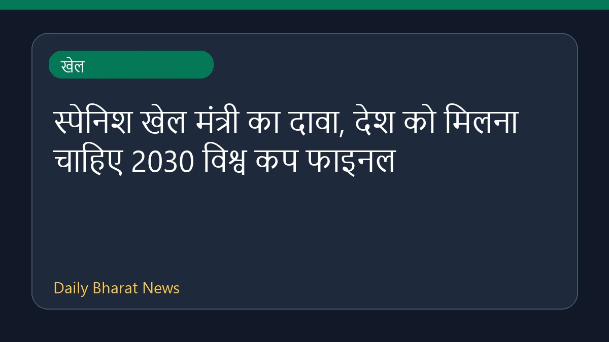

स्पेनिश खेल मंत्री का दावा, देश को मिलना चाहिए 2030 विश्व कप फाइनल

स्पेन के खेल मंत्री का कहना है कि उनके देश को मोरक्को की बजाय 2030 फीफा विश्व कप के फाइनल की मेजबानी करने का अधिकार है। इस बीच, मीडिया रिपोर्टों में दावा किया गया है कि फीफा अध्यक्ष जियानी इन्फेंटिनो ने समर्थन हासिल करने के बदले मोरक्को को विश्व कप के फाइनल की मेजबानी की पेशकश की है। इन रिपोर्टों में फीफा नेतृत्व पर गंभीर आरोप लगाए गए हैं, हालांकि इस संबंध में विस्तृत आधिकारिक जानकारी सीमित है।
मूल स्रोत: Sports News Sources
Spain's sports minister says country 'deserves' to host 2030 World Cup final, not Morocco - espn.in ↗
Spain's sports minister says country 'deserves' to host 2030 World Cup final, not Morocco - espn.in ↗